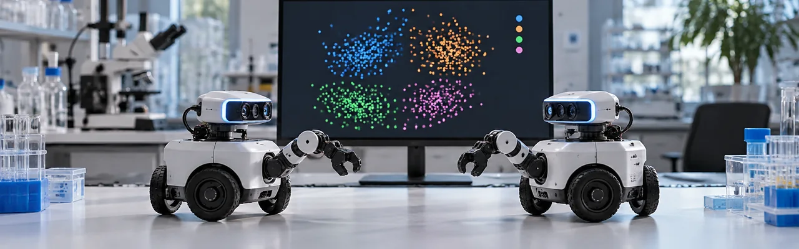

Researchers at Vrije Universiteit Brussel and the University of Namur ran large-scale simulations of autonomous agents with no shared dictionary and no central coordinator, and watched them settle on a consistent naming system for what they perceived, grounded in the data itself rather than borrowed from human text, across 37 public datasets. It's a long way from a chatbot, published in the journal Transactions of the Association for Computational Linguistics, but it's a real step toward machines that can describe what they're sensing to each other rather than just recite words a model already knows.
Source: aclanthology.org →Google, Google DeepMind and MIT FutureTech combined a survey of 637 scientists in the US and UK with an inventory of thousands of specialised science AI models, and found that roughly 80% of respondents say their lab's output has risen over the past three years, with AI handing back close to a working day's worth of time most weeks. The report is candid about the limits too: nearly half of those surveyed also said AI nudges them toward safer, incremental projects rather than the riskiest open questions.
Source: hpcwire.com →Biohub's Virtual Biology Initiative has grown to a combined $1.8 billion after the US Department of Energy and the National Institutes of Health joined in, with Google DeepMind, Isomorphic Labs and Meta together contributing $300 million, all aimed at building open, standardised biological data that predictive AI models can actually learn from. The goal is a "virtual cell" that can forecast how a cell responds to a drug or a changing environment, a research tool rather than a finished product, with a first shared dataset expected within about a year.
Source: eurekalert.org →